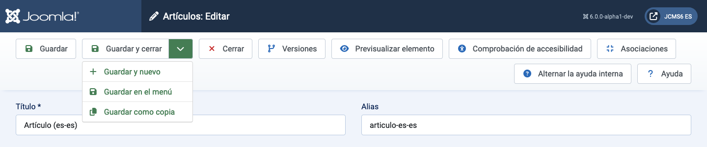
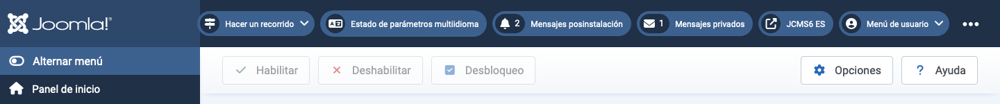

Las barras de herramientas están presentes en casi todas las páginas del Administrador de Joomla!. Los tableros son las excepciones notables. Están ubicadas en la parte superior de la página, inmediatamente debajo de la barra de título que contiene el nombre de la página y varios módulos de estado, como la Versión de Joomla y el enlace a la página principal.
Cada página tiene un complemento de botones adecuados para su propósito. Algunos son comunes, como Guardar, Cancelar y Ayuda. Otros son raros, como Reconstruir y Eliminar huérfanos. Algunos siempre están activos. Otros están inactivos (grises) hasta que se selecciona una casilla de verificación de un elemento de la lista.
Si hay muchos botones, se ajustarán en dos filas. Algunos ejemplos:

Los botones sin un icono de cheurón hacia abajo funcionan de inmediato. Así que Guardar guardará la página y retornará con un mensaje de confirmación verde o un mensaje de error rojo. Tenga en cuenta que, en la mayoría de los casos, el botón Cancelar cerrará una página de edición sin guardar los cambios.
Los botones con un icono de cheurón hacia abajo tienen dos funciones. Seleccione el icono y aparecerá una lista, como se muestra en la captura de pantalla anterior. Eso permite la selección de acciones alternativas. Seleccione el botón y se realizará esa acción. Así, Guardar y cerrar en el ejemplo de la captura de pantalla.
Algunos botones solo aparecen en ciertas circunstancias. Por ejemplo, el botón Comprobación de accesibilidad solo aparece si el plugin Sistema - Verificador de accesibilidad de Joomla está habilitado. Y Asociaciones solo aparece en sitios multilingües.
¡Por favor, explore lo que hacen los diferentes botones!

En este ejemplo de barra de herramientas, los botones están grises para indicar que están inactivos. Se vuelven brillantes y activos cuando se marca una casilla de verificación de un elemento de plugin para dejarlo listo para habilitar, deshabilitar o registrar entrada. Se pueden seleccionar varios elementos de la lista para acción simultánea, que es el propósito principal de estos botones de la barra de herramientas. Los elementos individuales se pueden procesar con los iconos en cada fila (no mostrados).
Traducido por openai.com